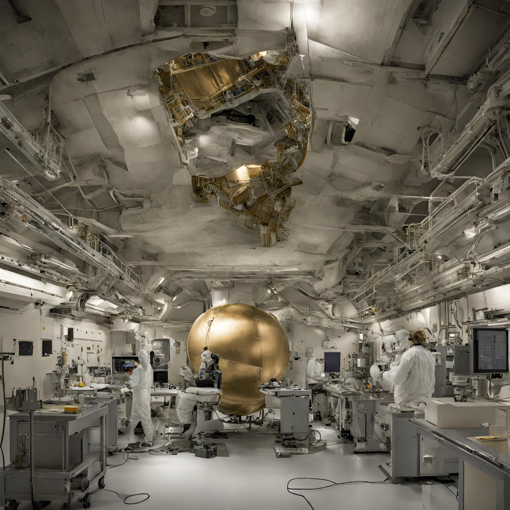
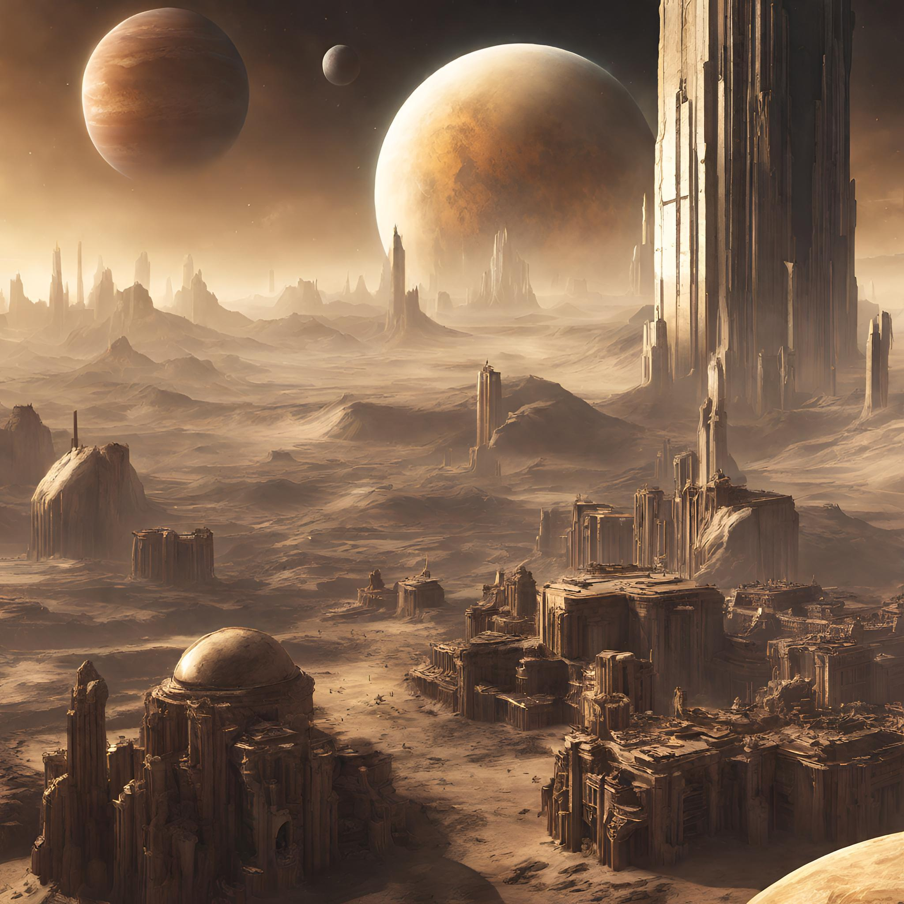
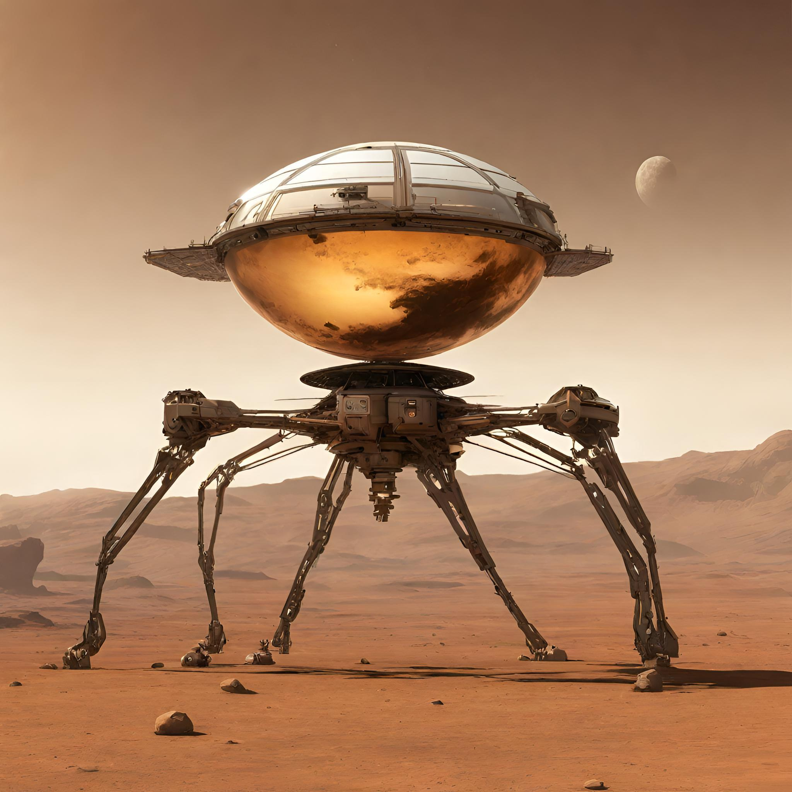
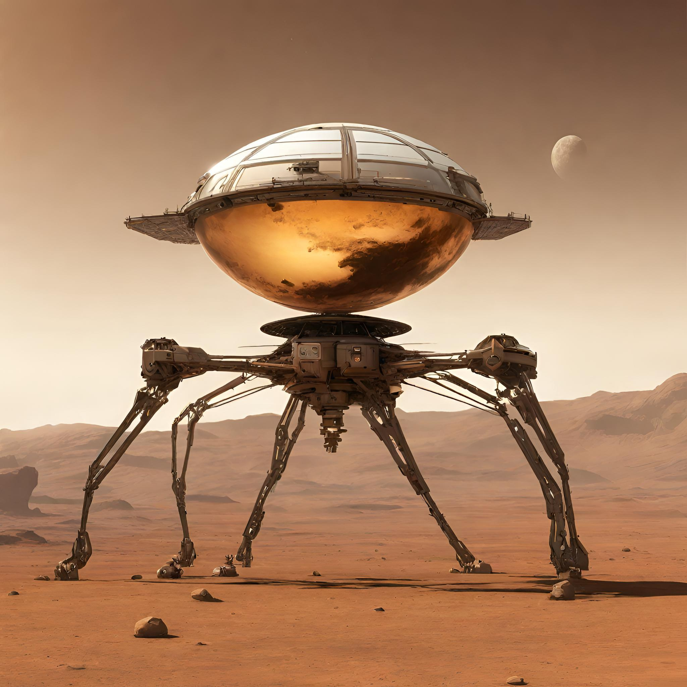
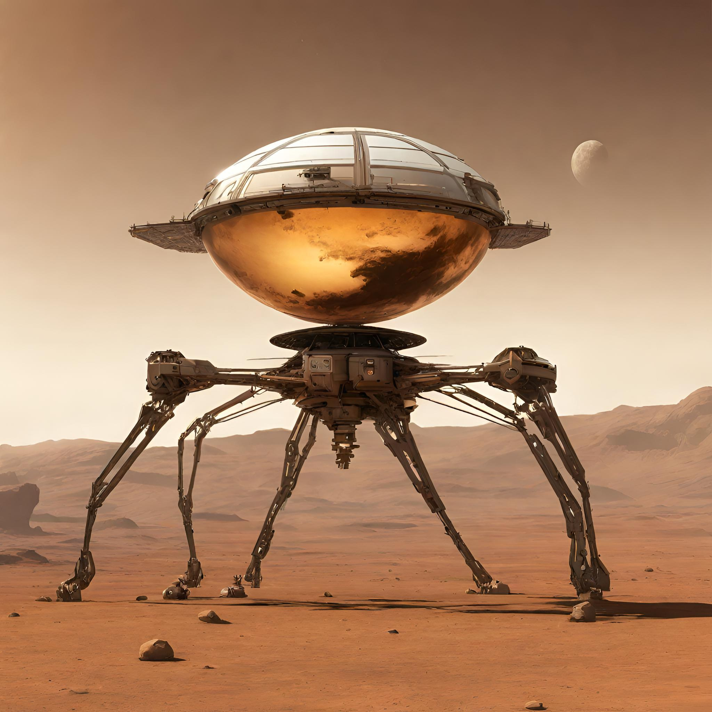

Overview of Titan
- Titan is the only world besides Earth that has standing bodies of liquid, including rivers, lakes, and seas, on its surface.
- Like Earth, Titan’s atmosphere is primarily nitrogen, plus a small amount of methane. Titan's atmosphere is mostly nitrogen (about 95 percent) and methane (about 5 percent), with small amounts of other carbon-rich compounds.
- Titan follows an earthlike cycle of liquids raining from clouds, flowing across its surface, filling lakes and seas, and evaporating back into the sky (akin to Earth’s water cycle).
- Titan is also thought to have a subsurface ocean of water.


 
Previous
Next

Previous
Next

Previous
Next